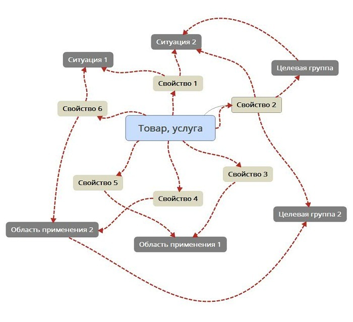
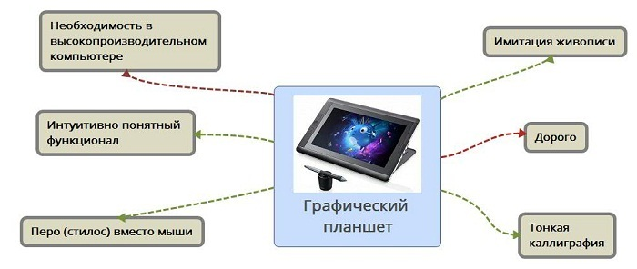
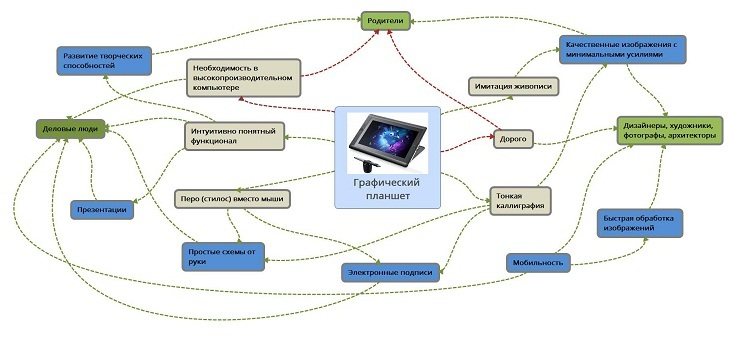
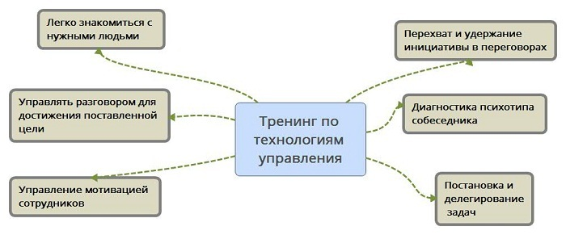
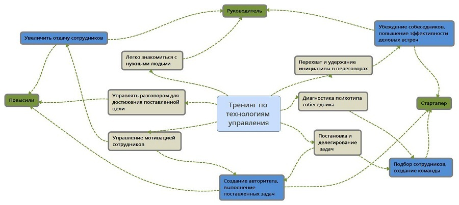

Как подготовить уникальное торговое предложение за 30 минут с помощью MindMap
 Если вы устали «ломать голову» как отстроиться от конкурентов, эта статья для вас. Интеллект-карты — не панацея, при этом они здорово облегчают структурирование информации при создании УТП. Весь процесс занимает в среднем 30 минут. В статье вы увидите как и что делать на примерах физического товара и образовательной услуги.
Если вы устали «ломать голову» как отстроиться от конкурентов, эта статья для вас. Интеллект-карты — не панацея, при этом они здорово облегчают структурирование информации при создании УТП. Весь процесс занимает в среднем 30 минут. В статье вы увидите как и что делать на примерах физического товара и образовательной услуги.MindMap не заменяет мозговые штурмы, опросы клиентов, веб-аналитику. Это способ мышления, поиска связей между 4 маркетинговыми параметрами:
— Свойства — характеристики продукта (что делает, как работает, из чего состоит);
— Преимущества — чем полезны для покупателей свойства продукта;
— Аудитория — чью жизнь продукт делает лучше;
— Ситуация — когда продукт может сделать жизнь покупателя лучше.
В результате получаем:
Ценность — как именно характерная черта продукта сделает жизнь покупателя лучше. Это то, ради чего вы создаете всю схему. Суть уникального торгового предложения.
В идеале УТП должно давать потенциальным клиентам ответы на 3 вопроса:
- Для чего мне это нужно, какую потребность закрывает?
- Почему именно этот товар, а не другие способы решения?
- Почему я должен купить именно у вас?
Ценность можно использовать:
— В заголовке посадочной страницы;
— В объявлениях контекстной, таргетированной рекламы;
— В продающих текстах на сайте, промо-материалах;
— В информационных статьях о продукте.
Почти у каждого товара или услуги несколько целевых групп и областей применения. Интеллект-карта поможет быстрее установить взаимосвязи свойств — потребительских выгод и подготовить предложения под каждую аудиторию.
Инструменты MindMap
Самый простой вариант — нарисовать карту вручную. Да-да, берете лист бумаги с ручкой и рисуете «как Бог на душу положит». Пусть это будет криво, с кучей почеркушек, при этом рисование руками раскрепощает, снимает страх сделать что-то не так.
Для фанатов гаджетов есть MyPaint — бесплатная программа, позволяющая делать цифровые изображения приемлемого качества. Не Фотошоп, однако навороты в этом случае и не нужны. Майндмэп сможет нарисовать человек с любым уровнем владения графикой. Удобнее всего работать на планшете.
Когда нужно «упаковать» карту красиво, берем специальные сервисы. Мы использовали XMind — простую в обращении кроссплатформенную софтину (работает в Windows, Linux, Mac OS).
Для начала «набросаем» примерную схему. В центре — товар или услуга. Первая «орбита» — все значимые свойства товара, и положительные, и негативные. Включение негативных свойств важно для отработки возражений. Последний круг — целевые группы + для чего и когда они используют продукт (области применения и ситуации).

От свойств протягиваем связи к ситуациям и целевым группам. Элемент, к которому ведет несколько стрелок, — ключевой для создания УТП.
Вот как это выглядит на примере графического планшета — устройства для рисования и редактирования изображений.
Пример №1
В первом круге — 6 характеристик товара. Положительные отмечены зелеными линиями, негативные — красными.

Преимущества в том, что с помощью планшета можно создать и обработать графику без специальных навыков и в несколько раз быстрее, чем с использованием мыши на «большом» компьютере.
Минусы в достаточно высокой цене (качественный планшет стоит 23-25 тыс.руб, некоторые модели до 45 тыс.руб) и необходимости в компьютере с мощной «оперативкой» и видеокартой для хранения изображений. Однако, это критично лишь для одной из целевых групп.
Продавцы графических планшетов представляют их как инструмент для творческих людей — фотографов, художников, дизайнеров, архитекторов. При этом у нас «вырисовывается» еще 2 целевые группы во втором круге. Мы называем его «Люди, ситуации, потребности»:

Вторая группа — это деловые люди. Ключевая ценность для них — возможность создавать простые схемы и презентации, «не заморачиваясь», в любом месте. Электронная подпись — вторичная потребность.
Вариант УТП для продающего текста — «Графический планшет Wacom: создавайте графики, схемы, презентации без мыши и Фотошопа».
Третья группа — родители, покупающие планшет детям для развития творческих способностей. При этом у них два минуса: дорого и мощный компьютер. Выход — покупка более простой модели. Детям нет необходимости делать «суперкартинки» в высоком разрешении.
Наконец, главная целевая группа — дизайнеры, художники, фотографы, архитекторы. Здесь выделим быстрое создание и обработку изображений. С минимальными усилиями и в любом месте, не теряя в качестве.
Вариант УТП — «Графический планшет Wacom: профессиональная редакция изображений «на коленке».
Это краткая версия для заголовков и текстов объявлений, а вообще ее можно развернуть подробнее в информационных статьях и промо-материалах. Со своими нюансами для архитекторов, дизайнеров, фотографов. Из этого можно сделать контент-план для серии публикаций.
Пример №2
Тренинг по технологиям управления. Цели и задачи — на схеме «Что дает тренинг»:

По итогам участник тренинга должен отработать навыки ведения переговоров, научиться ставить и контролировать задачи, диагностировать психотип собеседника, устанавливать контакт с нужными людьми очно и по телефону. Главная особенность тренинга — развитие навыка договариваться и убеждать собеседников на любом уровне, от сотрудников отдела до бизнес-партнеров. Отсюда несколько потребностей и целевых групп:

Итак, у нас три типа участников: руководители со стажем, руководители без опыта («Повысили») и стартаперы.
Руководители со стажем приходят за увеличением отдачи сотрудников («просели» продажи, упала мотивация) и повышением эффективности деловых встреч — убеждение собеседников, больше сделок. Две равнозначные ценности, поэтому лучше сделать независимое предложение под каждую, с пошаговой «подводкой». Через серию материалов в email-рассылке, например.
Примерные темы: «Как управлять сотрудниками без авралов», «Как бороться с пофигизмом сотрудников», «Как проводить полезные совещания» и т.д. в первом случае.
Во втором — «Пять правил переговорщика», «Система жестких переговоров, приносящая $100 миллиардов в год» и т.д.
Для «повышенцев» выделим создание авторитета, выполнение поставленных задач.
Наконец, стартаперам, на наш взгляд, важно создать боеспособный коллектив единомышленников в первую очередь.
P.S. В заключении отметим, что интеллект-карты — не готовое решение УТП. Они помогают разложить исходную информацию «по полочкам», отделить важное от второстепенного, определить стратегию донесения ценности — создавать только короткий лендинг или серию статей в рассылке, например.
Делитесь опытом, задавайте вопросы в комментариях по использованию методики в вашем бизнесе. Обсудим, поможем)